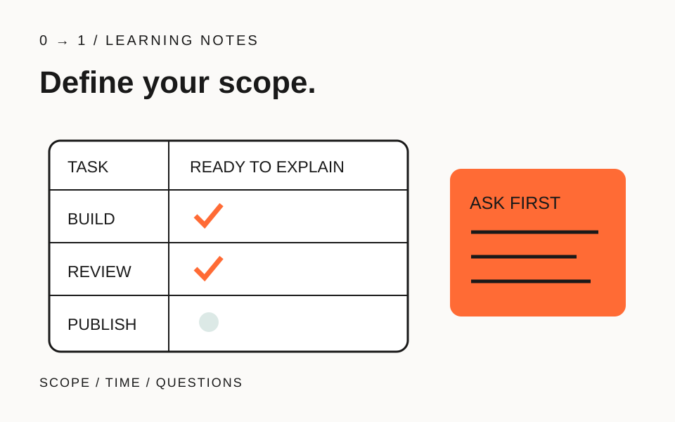

この記事の目次
副業としてWeb制作を始めたいとき、「何でも作れます」と書く前に、どの作業を自分で確かめられるかを整理しましょう。この記事で扱うのは、応募や相談に進む前の準備です。案件の獲得方法や収入額ではなく、引き受ける範囲を説明するための編集部からの提案です。
題材は、架空の手芸サークルから届いた「活動紹介を一ページにしたい」という依頼です。実際に受注した事例ではありません。自分の練習作品を材料に、約束できることと調べる必要があることを分けます。
「一ページ制作」を、作業の一覧にほどく
一ページでも、原稿を整える、写真を選ぶ、画面を組む、公開するという別々の作業があります。依頼文だけで全部を含むと決めず、誰が何を用意するかを書き出します。
今回の模擬例では、原稿と写真は依頼者が用意し、自分は受け取った内容の配置と実装を担当する、と仮定します。予約機能の追加や撮影は含めません。単に「対象外」と書くのでなく、必要になったら制作を始める前に相談する項目として残してください。
企画そのものに迷う場合は、最初のサイトで決めることへ戻れます。ここでの完成物は企画書ではなく、自分の担当範囲を伝えるメモです。
練習作品で、確認できた作業に印を付ける
各作業の横に「自分で完了した」「資料を見ながらできた」「まだ試していない」のいずれかを記入します。教材を見た経験と、自分の制作物で結果を確かめた経験は分けてください。
例えば、紹介文の差し替えはできても公開を試していないなら、「制作から公開まで対応」とまとめず、公開手順を練習する課題を残します。未経験の作業を隠したまま納期だけ決めると、何を調べる時間なのかも計画に入りません。
この印は能力の点数ではありません。説明に使える記録を探す目印です。確認したファイルや画面を一つ添え、別の内容に差し替えても同じ手順をたどれるかを見直しましょう。
作る時間とは別に、読む時間と直す時間を置く
一週間の空き時間をすべて制作で埋めず、届いた原稿を読む枠と、指摘を受けて修正する枠も予定へ入れます。日中に返信できないなら、確認できる曜日や時間帯を事前に説明する文を用意します。
「平日夜に確認し、作業日は土曜日を予定しています」という書き方なら、いつでも対応するという誤解を避ける材料になります。これは条件の記入例です。実際の対応予定は自分の生活に合わせ、相手と確認して決めます。
練習では、原稿が予定日に届かない場合も想定してください。その日は何を進められるか、どの作業が止まるかを書けば、納期を一方的に断定せず相談する材料ができます。
曖昧な依頼には、見積もる前の質問を返す
「問い合わせも付けて」と追加されたら、見た目だけの相談か、送信して受信する仕組みまで必要かを確かめます。分からないまま引き受けるより、必要な動作と担当を先に聞く段階を置きましょう。
質問は「詳しく教えてください」だけで終えず、「誰が内容を受け取り、どこで確認する想定ですか」と具体化します。ここではフォームを実装する方法は扱いません。依頼の言葉から未確認の作業を見つける練習です。
15分で、相談に持っていく四行を作る
時間は目安です。架空の依頼について「担当する作業」「用意してもらうもの」「連絡できる時間」「着手前に聞くこと」を一行ずつ書きます。最後に、練習作品で未確認の作業が担当欄に紛れていないかを点検してください。
質問を作る練習には、ヒアリングの無料レッスンを使えます。まず一つの依頼に対して説明できる範囲を整え、試していない部分は次の練習へ回しましょう。
記載内容へのご質問や訂正のご連絡は、hello@junkbranding.comまでお願いします。